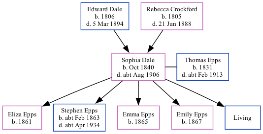

Sophia Epps (née Dale) 1840 - c1906
[ Home ] | [ Calendar ] | [ Surnames Index ] | [ Family History ]The daughter of Edward Dale (an agricultural laborer) and Rebecca Crockford, Sophia Dale, the three times great-aunt of Nigel Horne, was born in Chartham, Kent, England in Oct 18401,2,3,4,5,6,7,8,9,10, was baptized there on Oct 11, 1840 and also married Thomas Epps (a laborer on a farm with whom she had 5 children: Eliza, Stephen, Emma, Emily and Edward, along with 1 surviving child) there at St Mary, on Dec 24, 185612.
Sophia spent all of her life in Kent, England. Throughout her life, she lived in several places around the county: in Chartham Hatch, Kent, England on Jun 6, 184114 and on Mar 30, 185115; in Thanington in 18613; at Dog Kennel House in Chartham on Apr 2, 187116; at her birthplace in 18815 (the same place as her mother had been living in 1871); at Milton Cottage in Chartham on Apr 5, 189117 (when she was living with her father, Edward); and at Marlowe Terrace, Thanington on Mar 31, 190118.
She died c. Aug 1906 in Bridge, Kent10,11 and was buried at St Nicholas, Thanington, Kent on Sep 29, 190613.
Parents
- Edward was born in 1806
- Rebecca was born in 1805
Children
- Eliza was born in 1861
- Stephen was born c. Feb 1863
- Emma was born in 1865
- Emily was born in 1867
Citations
- 1841 England Census Online publication - Provo, UT, USA: The Generations Network, Inc., 2006.Original data - Census Returns of England and Wales, 1841. Kew, Surrey, England: The National Archives of the UK (TNA): Public Record Office (PRO), 1841. Data imaged from the National
- 1851 England Census Online publication - Provo, UT, USA: The Generations Network, Inc., 2005.Original data - Census Returns of England and Wales, 1851. Kew, Surrey, England: The National Archives of the UK (TNA): Public Record Office (PRO), 1851. Data imaged from the National
- 1861 England Census Online publication - Provo, UT, USA: The Generations Network, Inc., 2005.Original data - Census Returns of England and Wales, 1861. Kew, Surrey, England: The National Archives of the UK (TNA): Public Record Office (PRO), 1861. Data imaged from the National
- 1871 England Census Online publication - Provo, UT, USA: The Generations Network, Inc., 2004.Original data - Census Returns of England and Wales, 1871. Kew, Surrey, England: The National Archives of the UK (TNA): Public Record Office (PRO), 1871. Data imaged from the National
- 1881 England Census Online publication - Provo, UT, USA: The Generations Network, Inc., 2004. 1881 British Isles Census Index provided by The Church of Jesus Christ of Latter-day Saints © Copyright 1999 Intellectual Reserve, Inc. All rights reserved. All use is subject to the
- 1891 England Census Online publication - Provo, UT, USA: The Generations Network, Inc., 2005.Original data - Census Returns of England and Wales, 1891. Kew, Surrey, England: The National Archives of the UK (TNA): Public Record Office (PRO), 1891. Data imaged from The National
- 1901 England Census Online publication - Provo, UT, USA: The Generations Network, Inc., 2005.Original data - Census Returns of England and Wales, 1901. Kew, Surrey, England: The National Archives of the UK (TNA): Public Record Office (PRO), 1901. Data imaged from the National
- England & Wales births 1837-2006 - Findmypast
- England & Wales, FreeBMD Birth Index, 1837-1915 Online publication - Provo, UT, USA: The Generations Network, Inc., 2006.Original data - General Register Office. England and Wales Civil Registration Indexes. London, England: General Register Office. © Crown copyright. Published by permission of the Cont
- England & Wales, FreeBMD Death Index: 1837-1915 Online publication - Provo, UT, USA: The Generations Network, Inc., 2006.Original data - General Register Office. England and Wales Civil Registration Indexes. London, England: General Register Office. © Crown copyright. Published by permission of the Cont
- England & Wales deaths 1837-2007 - Findmypast
- England Marriages 1538-1973 - Findmypast
- Kent, Canterbury Archdeaconry burials 1538-1988 - Findmypast
- 1841 England, Wales & Scotland Census - Findmypast (was age 0)
- 1851 England, Wales & Scotland Census - Findmypast (was age 11 and the daughter of the head of the household)
- 1871 England, Wales & Scotland Census - Findmypast (was age 31 and the wife of the head of the household)
- 1891 England, Wales & Scotland Census - Findmypast (was age 50 and the wife of the head of the household)
- 1901 England, Wales & Scotland Census - Findmypast (was age 63 and the wife of the head of the household)
Media
England & Wales births 1837-2006 Transcription - BMD-B-1840-4-AL-000689-036
England & Wales marriages 1837-2008 Transcription - BMD-M-1856-4-BL-000255-035
Canterbury Marriage Banns Transcription - GBPRS-CANT-M-94078163-2
Canterbury Marriages Transcription - GBPRS-CANT-M-97244329-2
England & Wales deaths 1837-2007 - BMD/D/1906/3/AZ/000107/369
Kent, Canterbury Archdeaconry burials 1538-1988 - GBPRS/CANT/D/95508077
England Marriages 1538-1973 - R_848404737/2
England Marriages 1538-1973 - R_848405604/2
1901 England, Wales & Scotland Census - GBC/1901/0005466923
1881 England, Wales & Scotland Census - GBC/1881/0004706002
1851 England, Wales & Scotland Census - GBC/1851/0005785496
1891 England, Wales & Scotland Census - GBC/1891/0005719333
1841 England, Wales & Scotland Census - GBC/1841/0014002938
1871 England, Wales & Scotland Census - GBC/1871/0014163376
Family Tree
Generated by Ged2Site. Last updated on Jul 20, 2025